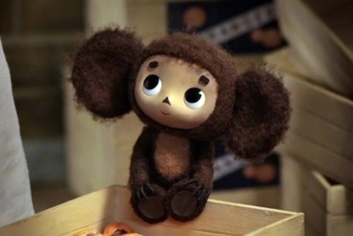
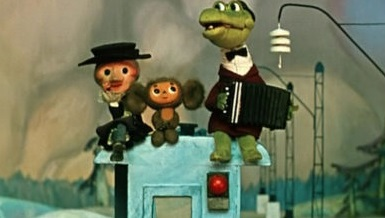

Заметки о Чебурашке и его друзьях
Избранные цитаты

Опять чебурахнулся! Фу ты, чебурашка какой.
Ч… Чай, чемодан, чебуреки, Чебоксары… Странно, никаких чебурашек нет.
Строили мы, строили и наконец построили!
Ты не горюй, Ген, передохнем и еще раз переделаем!
– Гена, тебе тяжело нести чемодан?
– да
– Гена, давай я возьму вещи, а ты возьмешь меня?
